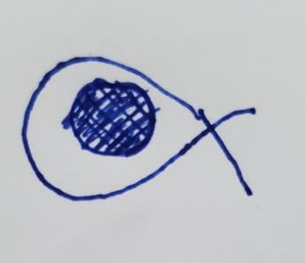
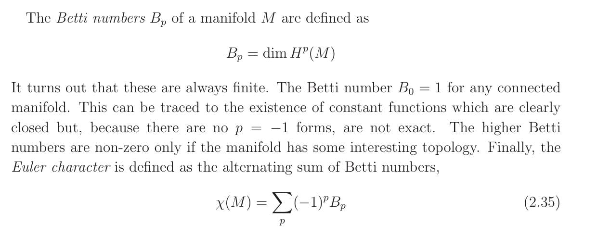

Motivating De Rham Cohomology: Random Topology Rants for Physicists Ep. 1
- tags
- #Maths #Algebraic-Topology #Mathematical-Physics #Differential Geometry
- published
- reading time
- 16 minutes
TL; DR
A lot of relativity texts (and even some differential geometry texts) briefly mention de Rham cohomology in relation with the differentiable structure of a (smooth) topological manifold, saying something like “de Rham cohomology captures which of the closed forms on the manifold are exact and that reflects the global topology of the manifold.” Which is good, because men sad, men see topology, men happy. But these intros don’t end up making you happy, since they leave out the rather simple algebraic topology ideas underlying it, which makes it very easy to see how the de Rham cohomology of a manifold, among other things, tells us the number of n-dimensional “holes” in the manifold. We review briefly how homology groups are defined for capturing the idea of n-dimensional holes in a general topological space, briefly review differential forms, and then construct de Rham cohomology groups of smooth manifolds as the duals of the homology groups with respect to integration of forms on n-dimensional chains. After we see this duality, we immediately see what, if anything, “closed” and “exact” forms have to do with “holes” in a space.
Prerequisites
Does the following describe you? If not, RUN FAST, RUN FAR!
- You know about differential forms and how they’re used to define integration on manifolds.
- You have seen “closed” and “exact” forms before, perhaps also a mention of Poincare’s lemma.
- You are familiar with exterior differentiation.
- You understand generalised Stokes’ theorem on manifolds.
- You are familiar with basic point-set topological notions, e.g. topology, manifolds etc.
- You are familiar with the notation used for commonly encountered topological spaces such as $S^1, S^2, T^2 \equiv S^1 \times S^1$ etc.
- You are familiar with basic (abstract) algebraic terminology, e.g. homomorphisms and their images and kernels, isomorphisms, quotient groups etc.
Homology Theory: A Cursory Glance
What is a hole?
Before importing new mathematical tools, it’s always necessary to motivate it. What exactly is the problem we’re trying to solve? How do existing tools help, and where do they fall short? What is the minimal amount of additional “structure” that you need to start dealing with this problem? What can you say about the problem from an intuitive POV? And how would you formalise those intuitions? For today’s discussion, we are concerned with the concept of n-dimensional holes in a space. What does it mean for a space to have a hole? What do we mean by n-dimensional holes?
Loosely speaking, it’s a hole you can capture with an n-dimensional rope, as shown in the following figure, where I use my outstanding drawing skills to show that a 1-D rope can capture a hole in the plane $R^2$.

Or in other words, by “n-D hole”, we mean “a hole bounded by an n-dimensional boundary”. As you can verify in the above figure again, the hole in the middle is indeed bounded by $S^1$.
What about higher dimensions? For example, $S^2$, the “hollow ball”, is a 2-surface enclosing a cavity. So we say that $S^2$ has a 2-dimensional hole.
Okay. Now how on earth are we to detect such holes?
An astute reader will probably propose something like the following. Take all possible closed n-surfaces within the manifold, and then see if any of them enclose a “gap” in the space.
But note that we’ve been visualising things from the perspective of a higher dimensional space. In our above figure, we see that gap as merely part of $R^2$ that is inaccessible perhaps to the inhabitants of that space, but not to us. How does an inhabitant of the space detect that there is such a “gap”, if he cannot ever even access such points in the first place?
Well, let’s look at this new figure and see if we can figure a way out of this predicament. We show two different loops. In one instance, they enclose the hole, in the other, they don’t. This suggests that the inhabitants may have the following idea: a “gap” is identified by looking at a closed loop that isn’t the boundary of anything. The figures outside of the holes labelled 1 and 1’ are areas bounded by closed loops and can, for example, be painted in a different colour by say a painter in this space Mr. 2dolf. However, as Mr. 2dolf will swear on his life to testify, the loops labelled 2 and 2’ do not enclose anything in such a way, and their “insides” cannot be painted simply because they don’t have none! They are closed loops that aren’t the boundaries of anything in the space (up to homotopy). Now that we have a clear idea about what we mean by a “gap”, we restate our simple plan for identifying holes in spaces:
Take all possible closed n-surfaces within the manifold, and then see if any of them enclose a “gap” in the space
where by “gaps”, we mean closed loops that aren’t the boundaries of anything.
That’s it. That’s the core idea behind homology theory. Simple, isn’t it? Now we’ll go ahead and formalise this notion.
Defining Homology Groups
Step 1: n-Chains and n-Cycles
For our purposes, we’ll loosely define n-chains as (integer) linear combinations of n-dimensional “line segments”. A chain is called a cycle if it starts and ends at the same place. So examples: a 0-chain would be simply a point. A 1-chain would be a line segment in the usual sense. a 2-chain would be a “plane segment”, for example (the interior of) a triangle, and so on. The space of all chains forms an abelian group we’ll denote $C_n$.
Step 2: $\partial_k$
Now we introduce the boundary operator for n-chains, $\partial_k: C_k \to C_{k-1}$, which eats a k-chain and spits out its ((k-1)-dimensional) boundary. For example, in the following figure, the 1-chain $L$ has boundary $\partial L := b - a$, whereas the 2-chain labelled $T$ has boundary $\partial T := x + y +z$. (Note that for assigning signs to the boundary elements, we have to choose a particular orientation for the chains)

Now note something very important. $\partial T$ is a closed chain, i.e. a cycle. So we have a very important criterion defining cycles or closed chains in general:
$$ \boxed{\partial X = 0} \text{ for any cycle X} $$
which implies that in general, boundaries of boundaries are zero, i.e.
$$ \boxed{\partial^2 X = 0} \text{ for any k-chain X} $$
Now a more carefully written version of this idea would specifically say
$$ \partial_{k-1}(\partial_k X) = 0 \newline \implies \partial_{k-1} \circ\partial_k = 0 $$
where X is a k-chain, since $\partial_k X$ is a (k-1)-chain.
Step 3: Defining $H_k (X)$
Now we’re well equipped to formalise our hole-dsecribing algorithm. Let’s reiterate what we agreed upon as a good enough starting point for our formalisation:
Take all possible closed k-surfaces within the manifold, and then see if any of them enclose a “gap” in the space
Now what on earth would we mean by this in precise mathematical language? Let’s dissect the above line and wrap as much up as possible within our newfound notational baggage.
- “All possible closed n-surfaces”. Well, what are they? They’re just k-D submanifolds $M$ of our space X such that $\partial_k M = 0$.
- “Gap in the space”. How do we capture gaps? By looking at cycles that are not the boundaries of anything. How do we get them? By first figuring out cycles that are the boundaries of something. k-D chains can only ever bound (k+1)-chains. So in other words, we want the image of the map $\partial_{k+1}: C_{k+1} \to C_{k}$, and after we have that, we simply “mod them out” from the space of all cycles in our space to get the ones that wrap around the holes.
So now let’s rephrase our original recipe for holes in this airtight mathematical language:
In an n-D manifold X, take all k-D (k < n) submanifolds $M$ such that $\partial M = 0$. Then from this space, mod out the subset which describe boundaries of (k+1)-submanifolds. We thus get our k-th homology group of X.
Or using much more economical language:
$$ \text{k-th homology group of X, }\newline \boxed{H_k(X)\equiv \ker(\partial_k) / \text{im}(\partial_{k+1})} $$
And what is the number of holes in our space? It’s clear that
$$ \text{\# Holes in X} = \dim H_k(X) $$
Okay, now with our arsenal ready to fire, let’s see them in action. Don’t worry – I ain’t taking you through exact computations. But all the ideas introduced so far will help us get a reasonably accurate intuitive picture about the computations involved.
Example 1: $H_1(S^1)$
We’re asking for 1-dimensional holes enclosed by the circle $S^1$. There’s just one, as we can immediately see (use your imagination you respected sloth) in an imagined figure. What does our formal language tell us about this hole? Let’s see. $H_1(S^1)$ is defined to be the space of 1-D chains with zero boundary, i.e. 1-D cycles, on the sphere, modded out by the space of objects that actually enclose some 2-D chains, which is none, so no modding is required at all. So that means our homology group just equals the group of 1-cycles on $S^1$. This is isomorphic to $\Z$, since such a cycle is uniquely determined by its winding number $n$ and the direction of winding (clockwise or counterclockwise). So we have ${H_1(S^1) \simeq \Z}$.
Example 2
2a: $H_1(\R^n)$ (for $n \ge 2$)
We approach similarly as example 1 (again requesting my respected readers to use their imaginations since I am writing this section the last and don’t have the energy to draw something up rn ($=$right now, not to be confused with $\R^n$)). Here we have the opposite extreme. Since there is no hole in $R^n$, every 1-cycle is the boundary of some 2-chain. Therefore, $\ker(\partial_n) = \text{im}(\partial_{n+1})$, and so the first homology group of $R^n$ is the trivial group with just the zero element: $\boxed{H_1(\R^n) = 0}$.
2b: $H_1(S^2)$
The argument proceeds identically to example 2a, so we obviously have $\boxed{H_1(S^2) = 0}$, i.e., the first homology group of the 2-sphere is also trivial.
2c: $H_2(S^2)$
This problem looks like example 2b, but in fact is isomorphic to example 1. In fact, I’ll tell you the general result right now: $\boxed{H_n(S^n) \simeq \Z}$
Example 3: $H_1(T^2)$
$\boxed{H_1(T^2) \simeq \Z^2}$
Example 4: $H_0(X)$ for arbitrary $X$
This is not a trick question! There indeed is a zeroth homology group for any topological space. What does it mean to have holes with zero-dimensional boundaries? Let’s carefully reason through our original definition then. $H_0 (X) = \ker\partial_0 / \text{im}\partial_1$. Start with the “numerator” in this quotient. We are to take 0-chains with no boundaries first. What does it mean? Well, every point in the space is a 0-chain, and no point has any boundary whatever. So it’s basically the entirety of $X$. What about the “denominator”? It says to take every 0-chain that is the boundary of some 1-chain, and mod $X$ out by their equivalence class. This would simply be the points at the “edges” of $X$. This means it simply measures the number of connected components $X$ has! Here’s an exercise for you. Try reasoning through this sketch for, say, $X = \large\sqcup\normalsize_{i=1}^n D^2$, where $\sqcup$ is used to denote a disjoint union.
Okay, so I hope you’ve seen enough examples to get a feel for homology groups, how we compute them, and what they represent. Now it’s time to turn to differential forms and see how they relate to the homology groups of a topological manifold.
Stokes’ Theorem and The de Rham Map
When I introduced the $\partial$ notation for boundaries, I hope this rang a bell in your minds – this is the same notation that appears in Stokes’ theorem!
$$ \text{ Stokes’ theorem } \newline\boxed{\int_R d\omega = \int_{\partial R}\omega} $$
where $\omega$ is a k-form, and $R$ is some k-dimensional submanifold. If you did, then well done. If not, well now you know. Now the integration domain, generally speaking, is some submanifold $M$ of our space $X$. So in fact we can use this integration operation to define a simple “inner product” between k-chains and k-forms:
$$ \langle \omega, M \rangle := \int_M \omega $$
This allows us to define a dual space of k-cochains (not to be confused with cocaine) given a space of k-chains. And as the above equation illustrates, these cochains are just differential k-forms! So in general, adopting the $\star$-notation to denote taking a dual (if you know about the Hodge star operation, this has nothign to do with the Hodge star as you should immediately be able to see; it’s simply convenient notational device), for every k-chain $M$ we have a k-cochain or a k-form $\omega$ such that:
$$ \star M = \omega $$
This is the crux of the idea behind cohomology, so let’s digest this a little more slowly. First we’ll recap what we did with our homology groups. We took our k-cycles, which are closed k-chains $\in C_k$ that get mapped to $0$ by $\partial_k$, and modded them out by those k-cycles that actually enclosed some (k+1)-chain. What the above inner product gives us is a canonical prescription for going from the k-chains $C_k$ to the k-forms $\Omega^k$ and vice-versa. Let’s call this dualisation map the de Rham “dictionary”. If this map exists and is well-defined, then, we get not just a standard way of going back and forth between the two seemingly different ways of describing the manifold, but we also get clear insights into how the topological structure of the manifold (described by the homology groups) dictate the possible field configurations on it.
Anyway, assuming we have the de Rham dictionary at hand, let’s now put it to use.
Hole-Detecting Algorithm Using Differential Forms
Previously, we detected k-dimensional holes of $X$ using k-chains, which naturally formed a vector space we called $H_k(X) \equiv \ker(\partial_k)/\text{im}(\partial_{k+1})$. In plain terms, we argued that by locating the space of all k-cycles and then identifying all the elements in them that form boundaries of a (k+1)-chain, we arrive at a vector space which describes the k-dimensional holes in $X$. Now we use the de Rham dictionary and translate our hole-detecting algorithm into differential forms lingo.
Which Forms Correspond to Cycles Bounding Higher Dimensional Chains?
Which cycles $M$ describe boundaries of higher dimensional objects $W$? It is precisely those that can be written as $M = \partial W$, where $W$ is a (k+1)-chain. Again, to help us translate to forms, we’d better call Stokes:
$$ \int_M \omega = \int_{\partial M} \lambda = \int{\partial^2 W} \lambda = 0 $$
where $\lambda$ is a (k-1)-form such that $\omega = d\lambda$, and the last equality follows since $\partial^2 W = 0$ for any chain $W$. In other words, $\omega$ is a cochain that’s dual to the chain $M$ that is a boundary. Such forms $\omega := d\lambda$ should then be called, appropriately, coboundaries. But since they, in forms-space, represent exact differentials, they are called exact. So anyway, we see that the image of $\partial_{k+1}$ (which includes $M$ in the above context) corresponds with the image of $d_{k-1}$, i.e.
$$ \star\text{im}(\partial_{k+1}) = \text{im}(d_{k-1}) $$
Which Forms Correspond to Cycles or Closed Chains?
Recall the mathematical criterion we set for detecting cycles $M \subset X$: $$ \partial M = 0 $$
To see which forms $\omega$ are dual to these cycles, we invoke our handy old friend Stokes: $$ \int_{\partial M} \omega = \int_M d\omega, $$
but since $\partial M = 0$, $$ \int_M d\omega = 0. $$
This means that the forms $\omega$ such that $d\omega = 0$ throughout $M$ will be dual to the cycle $M$. In other words, they are cocycles, or, wait for it, co-(closed chains). This is why a form which has a vanishing exterior derivative is called “closed”, as they imply that they’re cochains to a closed submanifold! If you’re like me, you’ve looked at every GR book ever and wondered why “closed” forms are called so. The “exact” forms are exact differentials so it makes sense, but there’s no logical explanation behind calling closed forms “closed”. Now you know!
So what we’ve found is that k-forms which differentiate to zero are dual to the k-cycles, i.e.
$$ \star\ker(\partial_k) = \ker(d_k) $$
where $d_k$ denotes the exterior derivative acting on k-forms (to return a (k+1)-form).
Lo and Behold! Your k-th de Rham Cohomology Group!
With all the ingredients in place, we now are well prepared to translate our k-th homology group into the language of differential forms. The k-th de Rham cohomology group of a manifold $X$, labelled $H^k_{dR}(X)$, is the dual vector space of the k-th homology group of $X$, i.e.,
$$ H^k_{dR}(X) = \star H_k(X)\newline \implies H^k_{dR}(X) = \star(\ker(\partial_k)/\text{im}(\partial_{k+1}))\newline $$
which using our results from the previous sections becomes, drum rolls please, $$ \implies \boxed{H^k_{dR}(X) = \ker(d_k)/\text{im}(d_{k-1})} $$
or in words,
$$ \text{k-th de Rham cohomology group of } X = \text{Closed Forms modulo Exact Forms} $$
Putting The Lingo to Good Use
Intuiting the Poincare Lemma
I’ll choose a statement of the lemma such that you’ll immediately see why it’s true if you remember our homology group examples.
On $M = \R^n$ , closed implies exact.
Tell me why? in the comments.
Betting Your Life On Betti Numbers
Here’s a paragraph from Prof. David Tong’s otherwise excellent set of lecture notes on GR.

As it stands, you’d be scratching your head all all day and still fail to compute a single Betti number even for the simplests of spaces, let alone the Euler characteristic. Even if you could somehow work out the numbers, would you bet your life on it? Also, isn’t the Euler characteristic supposed to look like $\chi = V-E+F$? But now that you know that cohomology groups are simply dual spaces of homology groups, you immediately see that the $p$-th Betti number just captures the number of $p$-dimensional holes in $X$! So using our results from homology computations, we have $$ B_0(X) = \text{\# connected components of }X,\newline B_1(X) = \text{\#1-D holes in }X,\newline .\newline .\newline .\newline $$
and so on. And it’s also plainly obvious now that the Euler characteristic defined above is the same thing as primary school Euler characteristic $V-E+F = 2$ for convex 2-surfaces.
References
I used the following resources in preparation for writing this piece, in no particular order, with relevant chapters mentioned alongside. You can consult these for further details and see if what I’ve been saying checks out. My recommendations are based on the postulate that you know everything mentioned in the pre-requisites, so I won’t suggest anything for that background material, but for everything else discussed above I will drop in a few bibliographic comments. Also, to get a proper appreciation for cohomology theory and much of algebraic topology in general, it is very helpful (and for most modern texts, essential) to know some category theory. Enjoy.
- Hatcher, Algebraic Topology. Chapters 2 and 3 are the relevant ones, with 2 discussing homology theory and 3 discussing cohomology. It should suffice to read chapter 2 only up to the section on simplicial homology along with a working knowledge of the definition of a category and a functor to jump into chapter 3, which discusses cohomology proper. Note that since the book deals with general topological spaces as opposed to manifolds, it doesn’t cover deRham cohomology.
- Lee, Introduction to Topological Manifolds. Chapters 17 and 18 discuss de Rham.
- Nakahara, Geometry, Topology, and Physics. Chapter 6 contains a highly detailed and thorough intro to de Rham cohomology.
- Zhou, Lecture Notes on Geometry and Topology. Chapter 6, section 6.7 discusses de Rham cohomology in a fairly compact manner, touching briefly upon many of the points I have covered here.
- Tong, General Relativity: University of Cambridge Part III Mathematical Tripos lecture notes. Section 2.4.3 introduces de Rham cohomology.